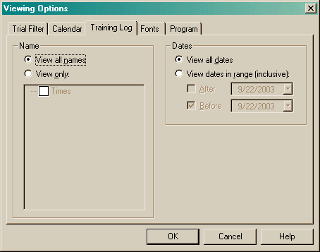

The Training Log options allow you to set a filter that will hide entries in the main view. These options work similar to the way the Trial filter works.

All View Options are saved into the local Windows Registry.